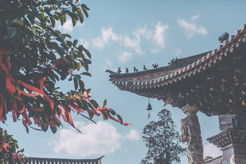
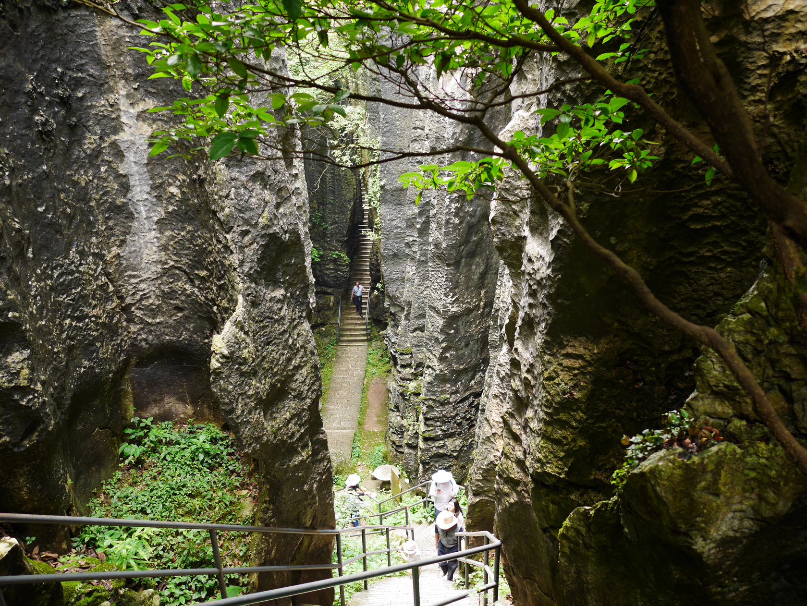
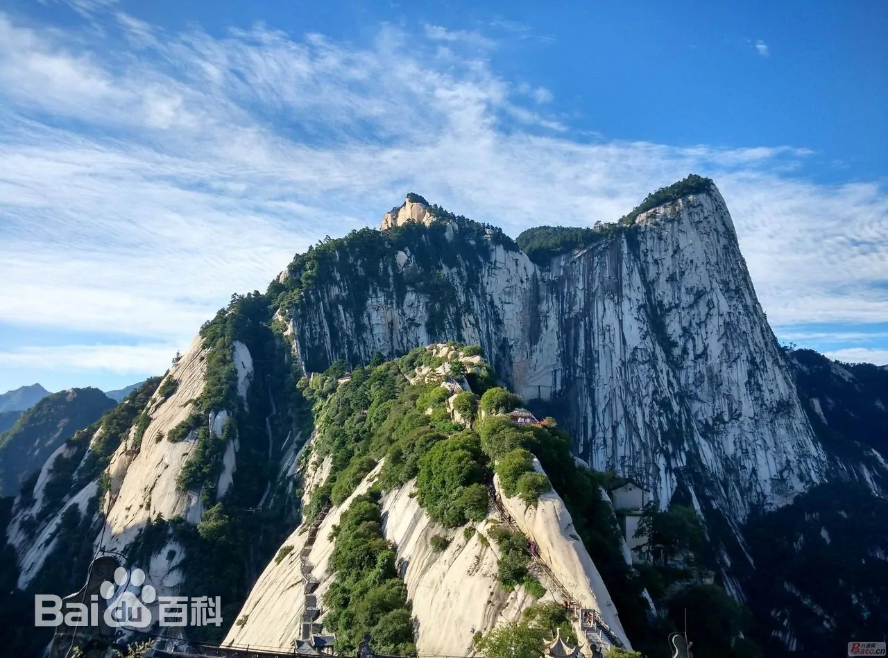

<!DOCTYPE HTML PUBLIC "-//W3C//DTD HTML 4.01 Transitional//EN">
<html>
<head>
    <!--是标题啊-->
    <title>Travel in China</title>
    <meta http-eqiv="content-type" content="text/html" charset="utf-8" />
    <meta http-equiv="Content-Language" content="en-us" />
    <meta http-equiv="imagetoolbar" content="no" />
    <meta name="MSSmartTagsPreventParsing" content="true" />
    <meta name="description" content="Description" />
    <meta name="keywords" content="Keywords" />
    <meta name="author" content="Enlighten Designs" />
    <style type="text/css" media="all">
        @import "main.css";
    </style>
    <script type="text/javascript" src="https://api.map.baidu.com/api?v=1.0&&type=webgl&ak=x40ygmxMnWTrbc5SFDu86CrDthVXgOr7"></script>
    <script type="text/javascript" src="//api.map.baidu.com/library/TrackAnimation/src/TrackAnimation_min.js"></script>
</head>
<body>
<div id="top_logo">
    <div id="right-top">
        <input type="text" name="t1" id="t1" placeholder="给你的旅行留一个念想"/>
        <ul>
            <li id="search" title="搜索"><a href="#"></a></li>
            <li id="home" title="主页"><a href="#"></a></li>
            <li id="community" title="社区"><a href="#"></a></li>
            <li id="shop" title="特产文创"><a href="Shop_home.jsp"></a></li>
            <li id="account" title="个人中心"><a href="#"></a></li> <!--<%=accounthref %>-->
        </ul>
    </div>
</div>

<div id="container">
</div>

<script>

</script>
<script>
//创建地图实例
var map = new BMapGL.Map("container",{enableMapClick: true});
//设置中心点
var point = new BMapGL.Point(116.404, 39.915);
//地图初始化
map.centerAndZoom(point, 7);
//鼠标滚轮
map.enableScrollWheelZoom(true);
//添加控件
var scaleCtrl = new BMapGL.ScaleControl();  // 添加比例尺控件
map.addControl(scaleCtrl);
var zoomCtrl = new BMapGL.ZoomControl();  // 添加缩放控件
map.addControl(zoomCtrl);
//控制控件位置
var opts0 = {
    offset: new BMapGL.Size(20, 90)
}
var cityCtrl = new BMapGL.CityListControl(opts0);  // 添加城市列表控件
map.addControl(cityCtrl);

//自定义marker
var myIcon = new BMapGL.Icon("image/scene/pot.svg", new BMapGL.Size(60, 60), {
    anchor: new BMapGL.Size(25, 40),
    //imageOffset: new BMapGL.Size(0, 0 - 25)   // 设置图片偏移
});
//添加标记北京天安门
var point1 = new BMapGL.Point(116.404, 39.915);
var marker1 = new BMapGL.Marker(point1,{icon: myIcon});        // 创建标注
map.addOverlay(marker1);
//marker1.addEventListener("click",function (){
//    trackAni.start();
//})
//文本
var content1 = '天安门';
var label1 = new BMapGL.Label(content1, {       // 创建文本标注
    position: point1,
    offset: new BMapGL.Size(-16, -25)
})
map.addOverlay(label1);                        // 将标注添加到地图中
label1.setStyle({                              // 设置label的样式
    color: '#fff',
    fontSize: '13px',
    background: '#1296db',
    border: '0px solid #1296db',
    fontWeight: 'bold'
})
// 创建图文信息窗口
var sContent = `<h4 style='margin:0 0 5px 0;'>天安门</h4>
    
    <p style='margin:0;line-height:1.5;font-size:13px;text-indent:2em'>
    天安门（Tian'anmen），坐落在中华人民共和国首都北京市的中心、故宫的南端，与天安门广场以及人民英雄纪念碑、毛主席纪念堂、人民大会堂、中国国家博物馆隔长安街相望，占地面积4800平方米，以杰出的建筑艺术和特殊的政治地位为世人所瞩目。
    天安门是明清两代北京皇城的正门，始建于明朝永乐十五年（1417年），最初名“承天门”，寓“承天启运、受命于天”之意。清朝顺治八年（1651年）更名为天安门。
    </p></div>`;
var infoWindow1 = new BMapGL.InfoWindow(sContent);
// marker添加点击事件
marker1.addEventListener('click', function () {
    this.openInfoWindow(infoWindow1);
    // 图片加载完毕重绘infoWindow
    document.getElementById('imgDemo').onload = function () {
        infoWindow1.redraw(); // 防止在网速较慢时生成的信息框高度比图片总高度小，导致图片部分被隐藏
    };
});
//批量添加标记点
var scene = [
    {"name":'西藏省林芝市',"province":'西藏省',"city":'西藏市',"title":'林芝'},
    {"name":'辽宁省沈阳市故宫',"province":'辽宁省',"city":'沈阳市',"title":'沈阳故宫'},
    {"name":'辽宁省沈阳市张氏帅府',"province":'辽宁省',"city":'沈阳市',"title":'张氏帅府'},
    {"name":'上海市东方明珠广播电视塔',"province":'上海市',"city":'上海市',"title":'东方明珠'},
    {"name":'河南省洛阳市老君山',"province":'河南省',"city":'洛阳市',"title":'老君山'},
    {"name":'云南省昆明市官渡古镇',"province":'云南省',"city":'昆明市',"title":'官渡古城'},
    {"name":'云南省昆明市石林景区',"province":'云南省',"city":'昆明市',"title":'石林景区'},
    {"name":'云南省大理市洱海公园',"province":'云南省',"city":'大理市',"title":'洱海'},
    {"name":'云南省大理市大理古城',"province":'云南省',"city":'大理市',"title":'大理古城'},
    {"name":'云南省丽江市玉龙雪山',"province":'云南省',"city":'丽江市',"title":'玉龙雪山'},
    {"name":'云南省丽江市丽江古城',"province":'云南省',"city":'丽江市',"title":'丽江古城'},
    {"name":'云南省丽江市泸沽湖风景区',"province":'云南省',"city":'丽江市',"title":'泸沽湖'},
    {"name":'陕西省华阴市华山风景名胜区',"province":'陕西省',"city":'华阴市',"title":'华山'},
    {"name":'湖北省武汉市武汉大学',"province":'湖北省',"city":'武汉市',"title":'武汉大学'},
];
//批量图文信息
var sContent_arr = [
    {"con":`<h4 style='margin:0 0 5px 0;'>林芝</h4>
    
    <p style='margin:0;line-height:1.5;font-size:13px;text-indent:2em'>
    林芝的桃花沟是一片天然野生桃林，高处有水源，四周林木葱茏，终年碧绿苍翠，间有流水，清澈见底。每年的三、四月，寒意未尽，但是这片巨大的野桃林给林芝带来了一片壮丽的春天，当远方的雪峰还有皑皑白雪，桃花却已如醉霞绯云般地争相斗艳。
    </p></div>`},
    {"con":`<h4 style='margin:0 0 5px 0;'>沈阳故宫</h4>
    
    <p style='margin:0;line-height:1.5;font-size:13px;text-indent:2em'>
    沈阳故宫，又称盛京皇宫，位于辽宁省沈阳市沈河区，为清朝初期的皇宫。沈阳故宫始建于清太祖天命十年（1625年），建成于清崇德元年（1636年）。 总占地面积63272平方米，建筑面积18968平方米。它不仅是中国仅存的两大皇家宫殿建筑群之一，也是中国关外唯一的一座皇家建筑群。
    </p></div>`},
    {"con":`<h4 style='margin:0 0 5px 0;'>张氏帅府</h4>
    
    <p style='margin:0;line-height:1.5;font-size:13px;text-indent:2em'>
    张氏帅府始建于民国三年（1914年）9月，总占地3.6万平方米，总建筑面积为2.76万平方米。民国五年（1916年）张作霖正式入住，以后又不断扩建，逐步形成了由东院、中院、西院和院外建筑等四个部分组成的的建筑体系。各个建筑风格各异，有中国传统式、中西合璧式、罗马式、北欧式、日本式。主要有大青楼、小青楼、西院红楼群及赵四小姐楼等建筑。
    </p></div>`},
    {"con":`<h4 style='margin:0 0 5px 0;'>东方明珠</h4>
    
    <p style='margin:0;line-height:1.5;font-size:13px;text-indent:2em'>
    东方明珠广播电视塔，简称“东方明珠”，位于上海市浦东新区陆家嘴世纪大道1号，地处黄浦江畔，背拥陆家嘴地区现代化建筑楼群，与隔江的外滩万国建筑博览群交相辉映，始建于1994年10月1日，是集都市观光、时尚餐饮、购物娱乐、历史陈列、浦江游览、会展演出、广播电视发射等多功能于一体的上海市标志性建筑之一。截至2019年，为亚洲第六高塔、世界第九高塔。
    </p></div>`},
    {"con":`<h4 style='margin:0 0 5px 0;'>老君山</h4>
    
    <p style='margin:0;line-height:1.5;font-size:13px;text-indent:2em'>
    </p></div>`},
    {"con":`<h4 style='margin:0 0 5px 0;'>官渡古城</h4>
    
    <p style='margin:0;line-height:1.5;font-size:13px;text-indent:2em'>
    作为一个历史悠久的古镇，官渡曾是一个誉满滇中的古渡口，是昆明历史文化名城古镇之一，唐宋时已是滇池东昆岸的一大集镇，元代与昆明同时设县，明清已成为商业、手工业很发达的乡镇。昔日官渡，商贾云集，高塔辉映，有五山、六寺、七阁、八 庙和众多人文景观， 至今仍保留着许多文化建筑遗址。
    </p></div>`},
    {"con":`<h4 style='margin:0 0 5px 0;'>石林景区</h4>
    
    <p style='margin:0;line-height:1.5;font-size:13px;text-indent:2em'>
    昆明市石林风景区，又称为云南石林，位于昆明石林彝族自治县境内，距离云南省会昆明78公里。范围达350平方公里。
    昆明市石林风景区开发为游览区的主要是：石林风景区、黑松岩（乃古石林）风景区、飞龙瀑（大叠水）风景区、长湖风景区。
    </p></div>`},
    {"con":`<h4 style='margin:0 0 5px 0;'>洱海</h4>
    
    <p style='margin:0;line-height:1.5;font-size:13px;text-indent:2em'>
    洱海，古称昆明池、洱河、叶榆泽等。位于云南省大理白族自治州大理市。一般湖水面积约246平方千米（一说251平方公里），蓄水量约29.5亿立方米，呈狭长形，北起洱源县南端，南止大理市下关，南北长40公里，是仅次于滇池的云南第二大湖，中国淡水湖中居第7位。洱海形成于冰河时代末期，其成因主要是沉降侵蚀，属高原构造断陷湖泊，海拔1972米。
    </p></div>`},
    {"con":`<h4 style='margin:0 0 5px 0;'>大理古城</h4>
    
    <p style='margin:0;line-height:1.5;font-size:13px;text-indent:2em'>
    大理古城位于云南省西部，又名叶榆城、紫城。古城其历史可追溯至唐天宝年间，南诏王阁逻凤筑的羊苴咩城，为其新都。古城始建于明洪武十五年（1382年），占地面积3平方公里。
    </p></div>`},
    {"con":`<h4 style='margin:0 0 5px 0;'>玉龙雪山</h4>
    
    <p style='margin:0;line-height:1.5;font-size:13px;text-indent:2em'>
    玉龙雪山为云南省丽江市境内雪山群，西临虎跳峡涧、南起玉湖，北至大具下虎跳峡口，隔江西与中甸雪山、东与绵绵山相并列，北自三江口，如扇面向古城展开。
    玉龙雪山在纳西语中被称为“欧鲁”，意为“天山”。其十三座雪峰连绵不绝，宛若一条“巨龙”腾越飞舞，故称为“玉龙”。又因其岩性主要为石灰岩与玄武岩，黑白分明，所以又称为“黑白雪山”。是纳西人的神山，传说纳西族保护神“三朵”的化身。
    </p></div>`},
    {"con":`<h4 style='margin:0 0 5px 0;'>丽江古城</h4>
    
    <p style='margin:0;line-height:1.5;font-size:13px;text-indent:2em'>
    丽江古城历史悠久，兼有水乡之容、山城之貌，从城市总体布局到工程、建筑融汉、白、彝、藏各民族精华，自具纳西族独特风采。古城多元文化相互融合的文化价值是研究中国城市建设史、建筑史、文化史不可多得的重要遗产，体现了特定历史条件下的城镇建筑中所特有的人类创造精神和进步意义。
    </p></div>`},
    {"con":`<h4 style='margin:0 0 5px 0;'>泸沽湖</h4>
    
    <p style='margin:0;line-height:1.5;font-size:13px;text-indent:2em'>
    泸沽湖湖盆区坐落于永宁盆地，是中国第三大深水湖泊，湖内有一小岛。泸沽湖周边主要居住着摩梭人、彝族和普米族，沿岸居住有蒙古族7种民族，约1.3万人。优美的自然环境和奇特的民族风情，使这里成为著名的旅游景区。
    </p></div>`},
    {"con":`<h4 style='margin:0 0 5px 0;'>华山</h4>
    
    <p style='margin:0;line-height:1.5;font-size:13px;text-indent:2em'>
    华山，古称“西岳”，雅称“太华山”，为五岳之一，位于陕西省渭南市华阴市，在省会西安以东120千米处。南接秦岭山脉，北瞰黄渭，自古以来就有“奇险天下第一山”的说法。
    中华之“华”源于华山，由此，华山有了“华夏之根”之称 。华山是中国道教主流全真派圣地，为“第四洞天”，也是中国民间广泛崇奉的神祇，即西岳华山君神。
    </p></div>`},
    {"con":`<h4 style='margin:0 0 5px 0;'>武汉大学</h4>
    
    <p style='margin:0;line-height:1.5;font-size:13px;text-indent:2em'>
    武汉大学是有着百年历史的名校，武大不仅有浓厚的学术氛围，而且美丽的武大校园更是名声在外，被誉为全国最美的大学校园。而武大樱花就是其中最为美丽的一景！
武大樱花开于三月中旬，至下旬最为鼎盛，花期较短，仅13-20天左右。每年樱花盛开之时，来自全国各地的游人旅客如织如潮，有百万以上的游客慕名而来。樱花大道旁摩肩擦踵，樱花纷飞，好不美丽！
    </p></div>`},
];
//创建地址解析器实例
var myGeo = new BMapGL.Geocoder();
// 将地址解析结果显示在地图上，批量添加标记和图文信息
addScene(scene);
function addScene(scene){
    for(var i=0;i<scene.length;i++){
        (function (i){
            myGeo.getPoint(scene[i].name, function(point){
                if(point){
                    //添加标记点
                    var marker = new BMapGL.Marker(point,{icon: myIcon});
                    map.addOverlay(marker);
                    //添加文本
                    var content = scene[i].title;
                    var dif = [0,0,-10,-16,-22];
                    var label = new BMapGL.Label(content, {       // 创建文本标注
                        position: point,
                        offset: new BMapGL.Size(dif[scene[i].title.length], -25)
                    })
                    map.addOverlay(label);                        // 将标注添加到地图中
                    label.setStyle({                              // 设置label的样式
                        color: '#fff',
                        fontSize: '13px',
                        background: '#1296db',
                        border: '0px solid #1296db',
                        fontWeight: 'bold'
                    })
                    var infoWindow = new BMapGL.InfoWindow(sContent_arr[i].con);
                    marker.addEventListener("click", function(){
                        this.openInfoWindow(infoWindow);
                        // 图片加载完毕重绘infoWindow
                        document.getElementById('imgDemo').onload = function () {
                            infoWindow.redraw(); // 防止在网速较慢时生成的信息框高度比图片总高度小，导致图片部分被隐藏
                        };
                    });
                    if(scene[i].province=='云南省'){
                        yunnan_point.push(new BMapGL.Point(point.lng, point.lat));
                    }
                }else{
                    alert('您选择的地址没有解析到结果！');
                }
            }, scene[i].city)
        })(i)
    }
}

//设置云南省旅游轨迹动画
var path = [{
    'lng': 103.324356,
    'lat': 24.812281
}, {
    'lng': 102.760121,
    'lat': 24.953658
}, {
    'lng': 100.24588,
    'lat': 25.603661
}, {
    'lng': 100.165497,
    'lat': 25.695471
}, {
    'lng': 100.22549,
    'lat': 26.87721
}, {
    'lng': 100.213715,
    'lat': 27.125282
}, {
    'lng': 100.7864,
    'lat': 27.683392
}];
var point2 = [];
for (var i = 0; i < path.length; i++) {
    point2.push(new BMapGL.Point(path[i].lng, path[i].lat));
}
var pl = new BMapGL.Polyline(point2,{strokeColor: "#1296db", strokeWeight: 3});
var trackAni = new BMapGLLib.TrackAnimation(map, pl, {
    overallView: true, // 动画完成后自动调整视野到总览
    tilt: 55,          // 轨迹播放的角度，默认为55
    duration: 5000,   // 动画持续时长，默认为10000，单位ms
    delay: 300 ,       // 动画开始的延迟，默认0，单位ms
});

//北京
var path3 = [{
    'lng': 116.297611,
    'lat': 40.047363
}, {
    'lng': 116.302839,
    'lat': 40.048219
}, {
    'lng': 116.308301,
    'lat': 40.050566
}, {
    'lng': 116.305732,
    'lat': 40.054957
}, {
    'lng': 116.304754,
    'lat': 40.057953
}, {
    'lng': 116.306487,
    'lat': 40.058312
}, {
    'lng': 116.307223,
    'lat': 40.056379
}];
var point3 = [];
for (var i = 0; i < path3.length; i++) {
    point3.push(new BMapGL.Point(path3[i].lng, path3[i].lat));
}
var pl3 = new BMapGL.Polyline(point3);
var trackAni3 = new BMapGLLib.TrackAnimation(map, pl3, {
    overallView: true, // 动画完成后自动调整视野到总览
    tilt: 30,          // 轨迹播放的角度，默认为55
    duration: 5000,   // 动画持续时长，默认为10000，单位ms
    delay: 300        // 动画开始的延迟，默认0，单位ms
});
//妄图封装
//var point4 = new BMapGL.Point(116.504, 39.915);
//var yunnan_point = [];
//var pl_yunnan = new BMapGL.Polyline(yunnan_point,{strokeColor: "#1296db", strokeWeight: 3});
//var trackAni_yunnan = new BMapGLLib.TrackAnimation(map, pl_yunnan, {
//    overallView: true, // 动画完成后自动调整视野到总览
//    tilt: 30,          // 轨迹播放的角度，默认为55
//    duration: 10000,   // 动画持续时长，默认为10000，单位ms
//    delay: 300 ,       // 动画开始的延迟，默认0，单位ms
//});

//设置右键点击出旅游路线图
var menu = new BMapGL.ContextMenu();
var txtMenuItem = [
    {
        text: '云南省云游路线图',
        callback: function () {
            trackAni.start();
        }
    },
    {
        text: '北京云游路线图',
        callback: function () {
            trackAni3.start();
        }
    }
];
for (var j = 0; j < txtMenuItem.length; j++) {
    menu.addItem(new BMapGL.MenuItem(txtMenuItem[j].text, txtMenuItem[j].callback, 100));
}
map.addContextMenu(menu);

</script>
</body>
</html>
